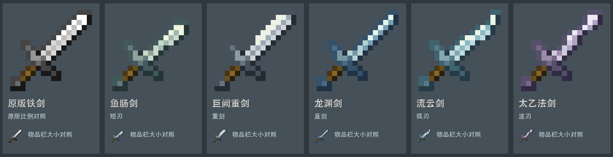

按用户12张截图中的可见轮廓分析；重复出现的剑归并，不凭缩略图猜物品名。截图中的材料、技能、饰品、方块不计为剑。

五把现有剑的新审稿：鱼肠短刃、巨阙宽刃、龙渊窄直刃、流云弧刃、太乙波刃。原版下半部形状与木握柄像素保留。已按用户本轮认可接入现有五个ID，并同步本地实例及导出包；未启动游戏验收。
| 截图 | 可见剑形 | 应用原则 |
|---|---|---|
| 1 | 标准直刃、修长直刃、宽叶短刃、轻微弧刃、装饰护手。右侧末端有钩形护手。 | 即使护手变形，握柄仍短而可辨；亮刃沿阶梯连续，暗背给出厚度。 |
| 2 | 多数为紧凑十字护手的标准双刃剑；金色直刃、浅蓝宽叶刃、细长灰刃并置。 | 低阶和高级可以共用原版比例，差异不必靠整体放大。 |
| 3 | 木色与灰色标准剑，紫红剑，红白斜纹剑，以及金色、红色、蓝色的外伸护手/局部增宽剑。 | 材质和轮廓分别设计；高级款只在剑根或刃背增加一两个明确结构。 |
| 4 | 下方两排有直剑、双头刃、带侧护圈的细剑、长柄长刃；上方重复展示装饰剑。 | 双头刃仍由两片阶梯刃与中柄构成；刺剑靠窄刃与小护圈识别，不依赖写实曲线。 |
| 5 | 细长直剑、双头刃、侧护圈剑、橙色刃缘突出剑、紫色棘刃、白色波刃、蓝色镂空/嵌芯宽刃、单侧弧形刃。 | 波刃用几段清楚折阶；镂空刃保持外框连贯，装饰集中剑根。斧锤等不纳入剑形。 |
| 6 | 绿白标准剑、青色弧刃、紫色细直刃、青黑宽刃、蓝白直刃。 | 普通剑也可改变尖端、宽度和背线，不必把所有差异塞到护手。 |
| 7 | 原版木石铁金钻石下界合金剑作为比例基准；紫绿浅色装饰剑、红色短宽刃、蓝色尖刃、橙色弧刃和深灰重剑。 | 与原版同屏是关键检查：柄长、刃长、描边粗细要协调。 |
| 8 | 带翼护手、宽叶刃、火焰/冰晶附刃、波刃、弧刃、暗色厚重刃、紫绿色镂空刃、蓝色细长直刃。 | 复杂剑保留主刃方向与短柄，附件有视觉主次；镰刀、镐、饰品另列。 |
| 9 | 短宽剑、细直剑、弧刃、标准十字剑、双色刃面、蓝色翼状剑根、青色护手突起。 | 普通剑的区别也可只改一段刃形，避免每把都重复大翅膀护手。 |
| 10 | 直剑/双头刃/刺剑/长剑的材料系列；火焰、棘刃、波刃、蓝色镂空宽刃和不同形状的剑根。 | 系列材质可以统一，但不同类型先用黑剪影区分；不是换颜色就算另一剑形。 |
| 11 | 上两排是标准像素剑及宽窄变化；下方是明显更长、更细密、跨格展示的立体剑模型。 | 不能把立体模型的超长比例和细密造型混入本轮16像素物品图标标准。 |
| 12 | 最下排橙色镂空刃、青色标准剑、粉色带翼刃、红紫宽刃；其余主要是材料和图标。 | 高级感来自受控的刃身轮廓、剑根附件和高反差色块，不来自给全部边缘加花纹。 |